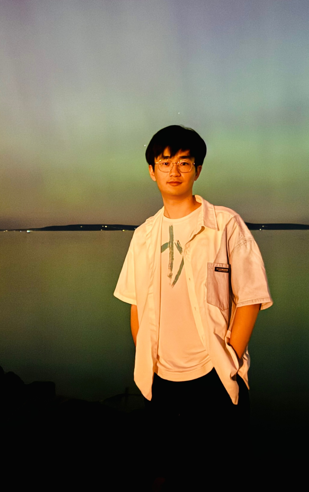

MMMG: A Comprehensive and Reliable Benchmark for Multitask Multimodal Generation
COLM · 2026

PhD Student · University of Washington
I'm a PhD student at the University of Washington’s Paul G. Allen School of Computer Science & Engineering, where I'm fortunate to be advised by Prof. Noah A. Smith. My research centers on multimodal learning, with a focus on how models understand and generate content across modalities. Before joining UW, I studied in the Yao Class at Tsinghua University, where I worked under the guidance of Zhilin Yang and Zhiyuan Liu.
I’ll be at COLM 2026 in San Francisco, October 6–9! Check out our work on MMMG, and feel free to reach out for a coffee chat.
Our work on LEGATO is cited in OpenAI’s GPT-6 Astra announcement!
Our new preprint, A Dual Evaluation for Music Transcription, is now on arXiv.
Our new preprint, LEGATO 2: Toward Multimodal Sheet Music Recognition and Understanding, is now on arXiv.
I joined Microsoft for a summer internship!
Our new preprint, Rubato: Transcribing Piano Music with Timestamps, is now on arXiv.
COLM · 2026
ICLR · 2026
arXiv preprint · 2026 (* equal contribution)
arXiv preprint · 2026
arXiv preprint · 2026
ISMIR · 2024
AAAI · 2023
Nature Machine Intelligence · 2023 (* equal contribution)